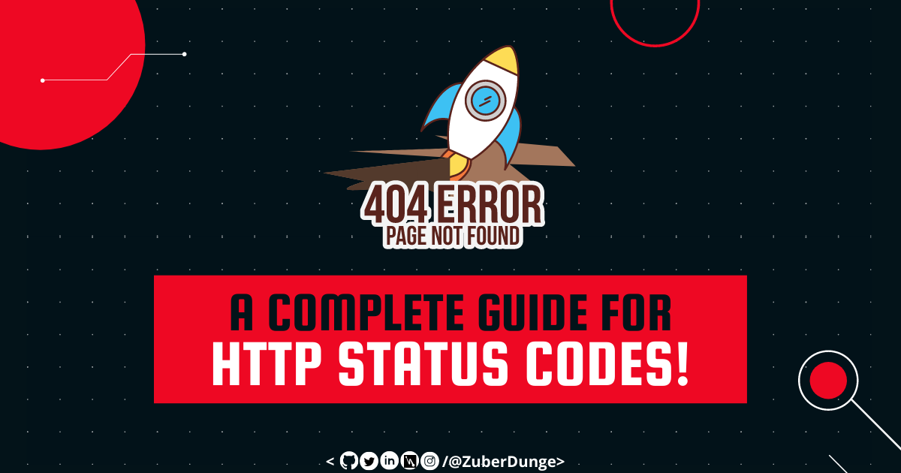

Wanna Know What 404 Actually Means?
It's more than just a broken link! Checkout this BLOG so next time you see something like this you'll know what's exactly the issue.

A Complete Guide for HTTP Status Codes!
In this blog, we’re going to learn about 40+ HTTP status codes that you may get.
From the 1XX- and 2XX-level codes to the trickier 4XX- and 5XX-level errors.